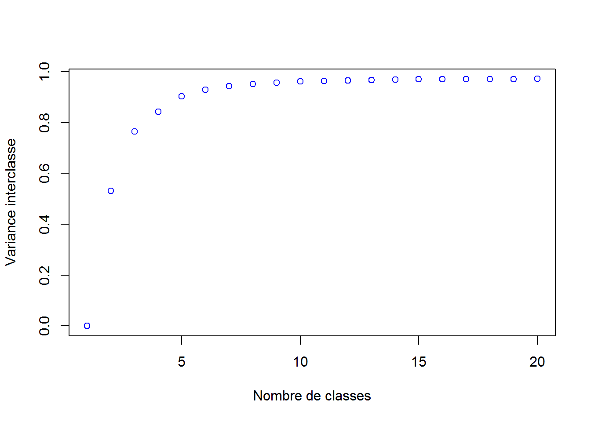

Chapitre 3 Analyse des features
Nous regardons la distribution d’une variable de chaque grande famille de données
3.1 La variable de distance sur la population: dist_P13_POP

On constate qu’il y a beaucoup de couple de communes qui ont une faible différence de population lors de la non-fusion. On retrouve le cas pour les communes rurales ou les grandes villes.
3.2 La variable sur l’appartenance politique: dist_Pol1

On constate, sur les non-fusions, une grande disparité des valeurs, ce qui n’est pas le cas pour la fusion. Ce qui confirmerait que les communes ayant fusionné ont une même tendance politique.
3.3 La variable du nombre de navettes inter-communes : nb_navettes

Nous sommes passés au logarithme afin de mieux visualiser la distribution, très asymétrique.
3.4 Matrice des corrélations

On constate qu’il n’y a pas de corrélations linéaires entre les variables de distances et les variables de nb. On voit qu’il y a des corrélations entre certaines variables. Par exemple, dist_P13_POP et dist_P13_LOC.
On garde toutes les variables afin de ne pas supprimer de la variance.
Avant de lancer les méthodes de ML, nous allons faire du clustering afin de voir s’il n’existerait pas de clusters de couples de communes.
3.5 Clustering
Etant donné le nombre important de lignes et la faible capacité de la machine. Nous ne ferons pas de CAH puis un K-means mais un k-means directement. Nous aurions ?galement pu faire un k-means pour diminuer le nombre de lignes et ensuite effectuer une CAH pour maximiser l’inertie interclasse (alors que le k-means minimise l’inertie intraclasse)

On voit que la variance intraclasse stagne à partir de 6 classes.
On voit qu’avec les 6 classes, on retrace près de 90% de la variance totale
On affecte, à chaque couple de communes, son cluster d’appartenance et on regarde dans chaque cluster la répartition de la variable fusion
##
## Fusion Non Fusion Sum
## cluster 1 5 333 338
## cluster 2 0 77 77
## cluster 3 11 1832 1843
## cluster 4 0 8 8
## cluster 5 0 20 20
## cluster 6 1758 105038 106796
## Sum 1774 107308 109082On constate que le cluster 1 contient la quasi-totalité des fusions. De plus, cette classe est marquée est consituée par les couples de communes les plus semblables :
| cl_class | dist_P13_POP | dist_SUPERF | dist_P13_MEN | dist_P13_LOG | dist_P13_RP | dist_P13_RSECOCC | dist_P13_LOGVAC | dist_P13_RP_PROP | dist_P13_EMPLT | dist_P13_EMPLT_SAL | dist_P13_POP1564 | dist_P13_CHOM1564 | dist_P13_ACT1564 | dist_ETTOT14 | dist_ETAZ14 | dist_ETFZ14 | dist_ETGU14 | dist_ETOQ14 | dist_ETTEF114 | dist_revmoy | dist_pot_fin | dist_Pol1 | dist_Pol2 | dist_evol_pop | dist_densite | dist_evol_empl | nb_locprop | nb_RS | nb_mig | nb_navettes |
|---|---|---|---|---|---|---|---|---|---|---|---|---|---|---|---|---|---|---|---|---|---|---|---|---|---|---|---|---|---|---|
| cluster 1 | 0.6528698 | 0.4429754 | 0.6713167 | 0.6772515 | 0.6713167 | 0.7720173 | 0.7383863 | 0.6068453 | 0.7092862 | 0.7117465 | 0.6596341 | 0.7060974 | 0.6525772 | 0.6900375 | 0.5166939 | 0.6292465 | 0.6988026 | 0.7117091 | 0.6946497 | 0.0946899 | 0.6645955 | 0.4251332 | 0.5655192 | 0.0245313 | 0.4671913 | 0.0378124 | 409.076923 | 39.1775148 | 402.425777 | 2254.08311 |
| cluster 2 | 0.7717572 | 0.5548627 | 0.7889639 | 0.7954441 | 0.7889639 | 0.8777274 | 0.8486011 | 0.7325376 | 0.8183085 | 0.8191151 | 0.7817643 | 0.8124234 | 0.7780262 | 0.8114469 | 0.6182068 | 0.7603281 | 0.8206782 | 0.8056679 | 0.8133097 | 0.1048239 | 0.7846550 | 0.3045638 | 0.6232960 | 0.0221584 | 0.4138208 | 0.0270296 | 1084.038961 | 99.2597403 | 909.003520 | 5286.95352 |
| cluster 3 | 0.5692132 | 0.3751107 | 0.5846876 | 0.5891793 | 0.5846876 | 0.6257900 | 0.6416092 | 0.5262392 | 0.6471399 | 0.6536227 | 0.5689283 | 0.6269799 | 0.5638316 | 0.5939463 | 0.4518727 | 0.5480083 | 0.6067305 | 0.6319027 | 0.6147784 | 0.0911368 | 0.5936009 | 0.4275222 | 0.5645617 | 0.0275561 | 0.4638924 | 0.0519686 | 118.395551 | 11.9506240 | 131.788638 | 643.78620 |
| cluster 4 | 0.8820297 | 0.8510783 | 0.8919122 | 0.8957517 | 0.8919122 | 0.9331496 | 0.9084888 | 0.8826418 | 0.9006597 | 0.8969974 | 0.8857381 | 0.8730461 | 0.8853207 | 0.9236429 | 0.9439857 | 0.8665048 | 0.9279170 | 0.9216889 | 0.9289184 | 0.1962382 | 0.8913489 | 0.1345052 | 0.7434921 | 0.0125245 | 0.1722364 | 0.0317686 | 5742.625000 | 678.7500000 | 3299.405619 | 26673.71041 |
| cluster 5 | 0.8483371 | 0.6820082 | 0.8692100 | 0.8750354 | 0.8692100 | 0.9494309 | 0.9127921 | 0.8267928 | 0.8472004 | 0.8427063 | 0.8574374 | 0.8595356 | 0.8530972 | 0.8874141 | 0.7631278 | 0.8218592 | 0.8943663 | 0.8883098 | 0.8812697 | 0.1623373 | 0.8511275 | 0.2511565 | 0.6189600 | 0.0133818 | 0.3522964 | 0.0246086 | 2305.850000 | 206.8500000 | 1673.812391 | 12578.32912 |
| cluster 6 | 0.3948445 | 0.2906449 | 0.3956746 | 0.3882293 | 0.3956746 | 0.4130290 | 0.4612233 | 0.3785998 | 0.5022158 | 0.5629996 | 0.3927604 | 0.4470152 | 0.3909049 | 0.3974463 | 0.3622695 | 0.4939238 | 0.4618564 | 0.4290194 | 0.4555829 | 0.0646239 | 0.4128903 | 0.4546936 | 0.5442040 | 0.0437398 | 0.3158759 | 0.1297288 | 3.129986 | 0.5201225 | 4.440111 | 15.21377 |